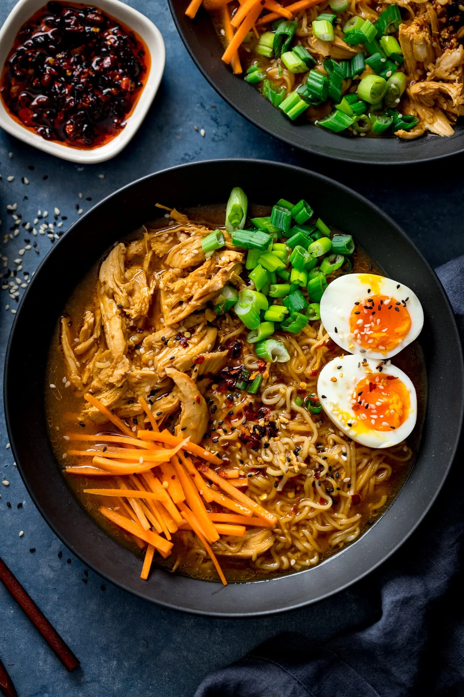

The Royal Ramen

Description
If you thought Mr. Noodle was good, wait till you try this exquesite ramen recipe!
Ingrediants
- Chicken breast
- green onion
- chicken broth
- shaved carrots
- two eggs
- salt
- pepper
- corn
- chilli flakes
- ramen noodles
- as always, a little love
Steps
- cook the chicken breast and slice into thin pieces
- boil the broth
- soft boil two eggs
- add salt, pepper and chilli flakes
- add carrots
- add corn
- add chicken
- add noodles
- once noodles are cooked to correct level, top with eggs, chicken breast and green onion.
- enjoy!